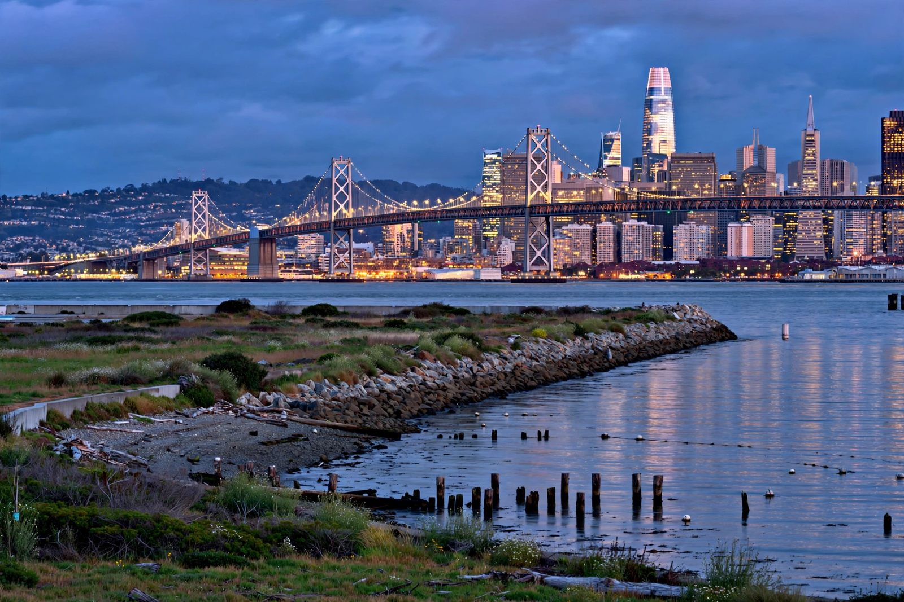

San Francisco Bay Area
From Wikipedia, the free encyclopedia

The San Francisco Bay Area, commonly known as the Bay Area, is a region surrounding San Francisco Bay in Northern California, comprising nine counties and the cities of San Francisco, San Jose, Oakland and Silicon Valley's technology belt. With about 7.7 million residents, it is the world's centre of the technology industry and venture capital, one of its richest metropolitan regions, and one of its most housing-constrained.
Geography and cities
The region divides into the Peninsula and San Francisco, the East Bay (Oakland, Berkeley), the South Bay (San Jose and Silicon Valley — actually its largest city), the North Bay (Marin, wine country approaches) and inland valleys. Two great bridges (Golden Gate, 1937; Bay Bridge, 1936) and BART bind it imperfectly; fault lines (San Andreas, Hayward) underwrite its seismic future.
Economy and culture
Gold made San Francisco; the counterculture made its myth; semiconductors and software made its modern economy — Apple, Alphabet, Meta, Nvidia and thousands of startups, with Stanford and Berkeley as feeders. The Bay Area's politics (progressive, NIMBY in tension), homelessness crisis amid extreme wealth, and post-2020 remote-work reshuffling are the running story of America's most consequential company town.